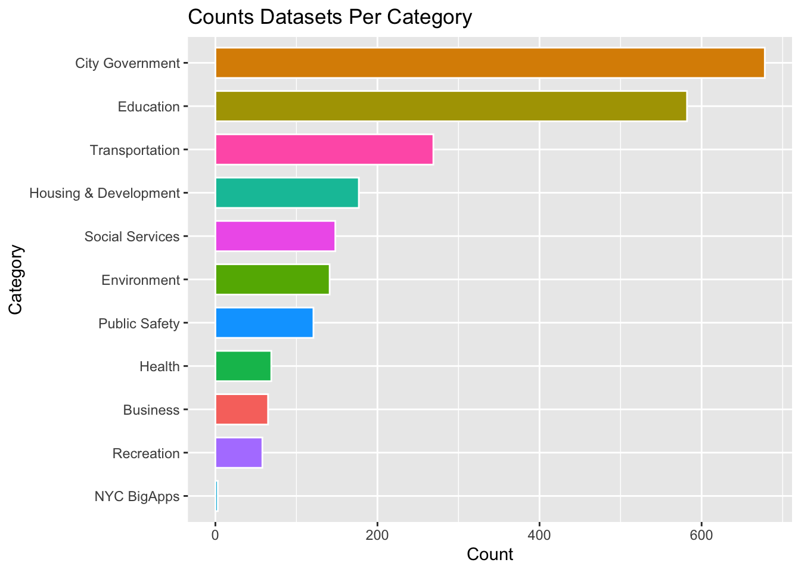

Welcome To NYC Open Data!
The City That Never Sleeps - And The Data That Keeps It Awake
NYC Open Data
Data Literacy
Civic Technology
Government Transparency
Urban Data
Public Policy
Data Science
Education
Author: Christian Martinez
New York City (NYC) is one of the largest metropolitan cities in the entire world, home to over eight million people. If you look at any block in Manhattan, there are any number of different things you can identify - trash cans, taxi’s, potholes…
But what keeps NYC really running? All of the pedestrian pathways? Public transportation? Roads?
Data.
One of the most powerful components of NYC is it’s data collection, all of which can be found on the NYC Open Data Portal. This portal contains over 2,000 individual datasets, ranging from City Government, Education, to Social Services.
Anyone with access to the internet can access this website, and any of the information on it, whether a native new yorker or someone who’s never visited the city.
But, this wasn’t always the case.
History of NYC Open Data
The NYC Open Data Portal is a fantastic tool, however, it wasn’t always available. There were a lot of trials and tribulations to get us here.
The City Record and Progressive Era of Government Reform
In the late 1800’s, William “Boss” Tweed was the mayor of NYC, and arguably the most corrupt politician NYC has ever seen - known for embezzlement, nepotism, and hoarding many of the opportunities within the city. With change needed, the progressive era of government reform began to take place, and the creation of The City Record happened. Dating all the way back to 1873, The City Record was a publication dedicated to making government more transparent - for instance, announcing city building projects that were happening.
For the first time, NYC was putting their work on display. The City Record is still going strong today, available in print and online. But, this was only the beginning.
Freedom of Information Laws
Jumping almost 100 years later, Freedom of Information legislation (FOIL) is passed at the federal level, and at the state level in New York (1974). This now made government information available on request.
So, if you had something you were looking for that existed and could be shared (not sensitive information), you’d be able to request it from the government. This was a huge shift in regard to government information. But how would one know what options were on file?
Public Data Directory
Moving to the 90’s, NYC created and disseminated the Public Data Directory, a huge edition to FOIL. It was an exhaustive list of city agency data so the average person could understand the available data options.
NYC Open Data Law
In 2012, New York City’s Open Data Law was signed into effect, which meant that you no longer needed to request data from the government - it was available to anyone at anytime. This is the foundation of the NYC Open Data portal.
The Data Inside NYC Open Data
The portal currently has thousands of datasets (and counting). These datasets have:
- over six billion rows of data
- over 50 thousand columns (essentially different datapoints)
- over 22 million downloads
- over 37 million visits
Wow.
To put that into perspective, that means that there are over three hundred fifty-four trillion individual datapoints currently on the platform, about forty four million per NYC resident.
With access to all of this data on the NYC Open Data portal, what is actually possible?
Anything.
You can answer questions such as:
- Which neighborhoods get the most 311 complaints?
- Are certain areas under-resourced?
- Which borough has the most motor-vehicle collisions?
And that is just scratching the surface. Of course, having data is one thing — using it is another.
Working with NYC Open Data
The simplest way to work with NYC Open Data is to utilize their portal. It is a very user-friendly platform. Additionally, there are introductory classes hosted by NYC Open Data Ambassadors to help anyone get started with exploring.
Exporting NYC Open Data
One of the fantastic things about the NYC Open Data portal is the ability to work with and export the raw data. There are a few ways to do so:
- CSV
- Excel file
- API (Application Programming Interface)
Note: Sometimes a given dataset might have too much data to download.
For example, currently, each new 311 request made to the city is tracked in the 311 Service Requests from 2020 to Present dataset, but currently has almost 21 million rows of data, which can be a lot for your computer to handle.
You can also use API’s, but that requires knowledge on how to use them, which can be a battle within itself.
To help, there is another tool that helps fix the technical complication that comes with API’s and the limitations (both financially and structurally) with programs such as Microsoft Excel for working with NYC Open Data.
nycOpenData package
To make accessing NYC Open Data even easier, without the use of API’s, the nycOpenData package can be used. This is a package inside of the programming language R.
R is an open-source platform that was designed to specifically work with data. One of the best features is that it is free, and in my family we have the saying, “if it’s for free, it’s for me.”
With this package, you can easily access any of the datasets found on the portal, with no need for an API or file. This is how we’ll explore NYC Open Data in future publications with The Advocate.
The Advocate NYC Open Data Series
NYC Open Data is an incredibly powerful tool that allows anyone with even an inkling of curiosity embark on a journey of discovery. In future articles we’ll dive into the data to answer questions regarding NYC. For instance, we may try to uncover how NY Sports impact 311 requests in their respective neighborhoods, or how these “pothole” blitz actually impact people’s lives.
In fact, we’d love to help answer any questions you have about the city!